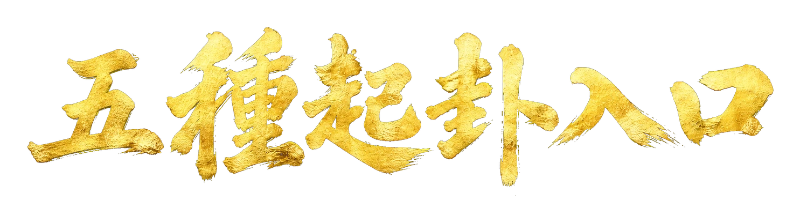

年月日時、物數、聲音、字占與古例補充分開演算。

同網域獨立專頁・固定規則・本機運算
把現行本所載公式逐步展開。只算卦象結構與時間尺度，不生成吉凶斷語。
康節觀象相傳邵雍所撰的現行傳本規則
梅花易數・皇極經世・完整算式可核對

年月日時、物數、聲音、字占與古例補充分開演算。
固定呈現本卦、互卦、變卦、動爻與體用位置。
把任意年數拆成元、會、運、世、年，不套用爭議西元基準。
傳本與方法邊界
本頁依現行本《梅花易數》及《皇極經世書》整理。書目常署宋邵雍撰，也有資料採「相傳」；本頁不宣稱現行傳本全為邵雍親筆。
乾 1、兌 2、離 3、震 4、巽 5、坎 6、艮 7、坤 8。卦數整除 8 時歸坤。
原典沒有公曆自動換算；本頁只把裝置時間當便利預填，仍保留手動修正。
可數之物、兩段聲數與十一字以上字數法分開，避免把任意號碼冒充通用古法。
一世 30 年、一運 360 年、一會 10,800 年、一元 129,600 年。這是傳統數制，不是科學宇宙週期。
五個獨立入口
請先選方法，再輸入該方法真正需要的數。所有資料只留在目前瀏覽器頁面，不儲存、不上傳。
元・會・運・世・年
這裡只把一段時間長度依固定倍率拆解，不把現代西元年對讀成唯一正統位置，也不產生預言。
可回到原文逐條核對
來源連結直達電子古籍或館藏影像。本頁只節錄方法，不大量複製電子轉錄全文。